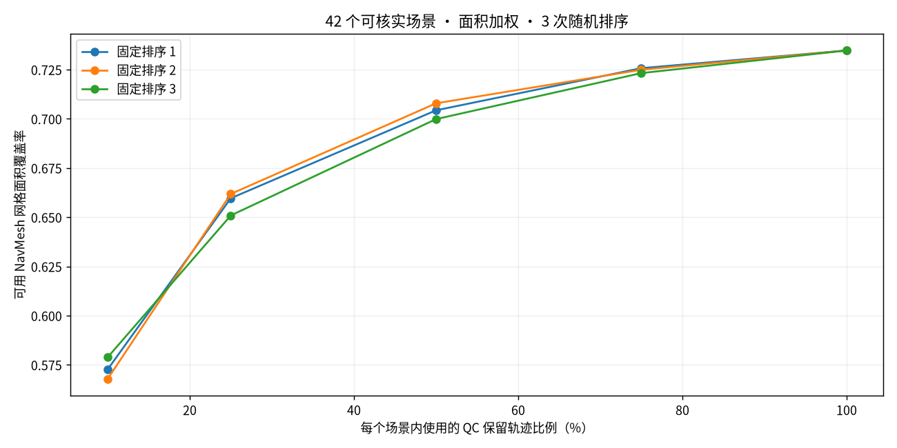

本次交付结论
完整性通过的唯一 episode 分母为 2,304,685，QC 保留率 84.19%；成功状态总账的唯一 episode 分母为 2,304,685，对应保留率 84.19%。分母保留成功冲突与完整性不足的影响，失败重试不混入成功样本数。
清单覆盖 900 个不同场景；实际发现成功记录的场景为 900，有完整记录的场景为 900。已引用归档均经过完整原始字节流大小、SHA256、CRC64 校验。另有 2 个 child_run 缺 complete.json，实际采集记录数未知；已知计划缺口单列，不计作可用成功样本。
整轨迹过滤与实际检查覆盖
| 互斥主排除原因 | 唯一 episode |
|---|
| extended_turn_gt_95 | 100,054 |
| black_component_gt_10pct | 177,119 |
| extended_reversal_gt_10 | 48,891 |
| score_below_7 | 15,900 |
| contrast_lt_7 | 22,452 |
| last3_reversal_gt_10 | 32 |
| ai_visual_unresolved_black_geometry | 2 |
| ai_visual_severe_geometry | 3 |
正式保留条件：无硬错误，quality_score 四舍五入两位后 ≥7.00，无未排除 suspicious。review 仅提醒。原始失败/未完成、未归档、成功状态完整性不足、成功冲突与 QC 质量过滤分别记账，多标签规则命中不直接相加。
两来源累计实际视频读取 2,304,685 条记录，完整解码 2,304,685 条记录，包含去重前重复采集；精确首／中／末累计 6,914,055 帧。完整 canonical 规则与实际视频读取覆盖 2,304,685 条；全视频顺序解码 2,304,685 条，精确原始首/中/末抽帧累计 6,914,055 帧，不足三个唯一帧 0 条。运动指标使用冻结回放时间，视频 PTS 独立记录。
AI 视觉复核仅覆盖 27 条轨迹的首/中/末帧，确认严重缺面 3 条，另有 2 条未排除视觉疑点并过滤；不是逐视频 AI 审核，不外推抽检异常率。自动 9.24 分的严重缺面样例已显式封顶 4.90 并过滤，保留证据链；没有静默黑区放行。
冻结计划交叉核对修正了 579,503 条采集记录的高度对应误报：真实 NavMesh 地形高度变化以归档记录的修正上限核验，另核对 XY、航向与时刻。真实采集位姿和图像保持原值，不插值补点；这不构成图像黑区规则放行。第一遍扫描结果保留审计作用，最终分数以 qc/FINAL_QC_INDEX.json 为准。
真实 NavMesh 网格覆盖与边界
可用且文件 SHA、归档 artifact ID/SHA 均匹配的 NavMesh 覆盖 42 个场景。按高度分开的 0.25 m 网格、轨迹水平 0.5 m 有限线段邻域，采用面积加权；分母 78,087 格（约 4,880.44 m² 网格面积），QC 前覆盖 61,153 格、之后 57,371 格。其余场景不制造分母，该结果不代表 900 场景覆盖率。
每场景内分别采用固定种子三次随机排序，取该场景轨迹 10/25/50/75/100%，再按面积汇总。重复覆盖按轨迹—网格对计数，同一轨迹内同格只计一次；筛选损失、无法映射轨迹/观测数均在下载 JSON 中披露。

按高度区分的真实 NavMesh 覆盖增长真实保留、边界及过滤样例
视频与等比例轨迹并排，完整身份、来源和证据逐例列出。报告仅选单视频 ≤25 MiB，媒体限制不用于筛选训练集合。
视觉确认严重缺面 · 质量分 4.90
scene_id: hm3d/train/00636-FXuXGH9YQTW/FXuXGH9YQTW.basis.glb
episode_id: hm3d__FXuXGH9YQTW__semantic_791537a5
source_name: supplement
source_prefix: oss://ss-oss1/data/user/yuanxu/vln_data/hm3d-r23-k3-bin1-20261105/supplement-20261111/
child_run: hm3d_r23_k3_bin1_supplement_20261111_scene_a9b98cd8f037
shard_id: FXuXGH9YQTW__00000
路程 7.04 m · 记录时长 20.50 s · 原始 42 帧。硬错误：['ai_visual_severe_geometry']；suspicious：无。
自动原分 9.24，视觉确认严重缺面后封顶 4.90；原始分数与证据均保留。
视觉确认严重缺面 · 质量分 4.90
scene_id: hm3d/train/00446-tL6i2PtktSh/tL6i2PtktSh.basis.glb
episode_id: hm3d__tL6i2PtktSh__semantic_083c8414
source_name: original
source_prefix: oss://ss-oss1/data/user/yuanxu/vln_data/hm3d-r23-k3-bin1-20261105/
child_run: hm3d_r23_k3_bin1_20261105_scene_3e736978131d
shard_id: tL6i2PtktSh__00000
路程 3.01 m · 记录时长 9.50 s · 原始 20 帧。硬错误：['ai_visual_severe_geometry']；suspicious：无。
自动原分 9.01，视觉确认严重缺面后封顶 4.90；原始分数与证据均保留。
视觉确认严重缺面 · 质量分 4.90
scene_id: hm3d/train/00639-AwL2QGztLwV/AwL2QGztLwV.basis.glb
episode_id: hm3d__AwL2QGztLwV__semantic_f8712149
source_name: original
source_prefix: oss://ss-oss1/data/user/yuanxu/vln_data/hm3d-r23-k3-bin1-20261105/
child_run: hm3d_r23_k3_bin1_20261105_scene_bdbe17126968
shard_id: AwL2QGztLwV__00015
路程 5.51 m · 记录时长 16.50 s · 原始 34 帧。硬错误：['ai_visual_severe_geometry']；suspicious：无。
自动原分 7.08，视觉确认严重缺面后封顶 4.90；原始分数与证据均保留。
保留样例 · 质量分 8.73
scene_id: hm3d/train/00063-KsD3yx9nZCv/KsD3yx9nZCv.basis.glb
episode_id: hm3d__KsD3yx9nZCv__semantic_000ad7fe
source_name: original
source_prefix: oss://ss-oss1/data/user/yuanxu/vln_data/hm3d-r23-k3-bin1-20261105/
child_run: hm3d_r23_k3_bin1_20261105_scene_0125be94035a
shard_id: KsD3yx9nZCv__00000
路程 9.49 m · 记录时长 29.50 s · 原始 60 帧。硬错误：无；suspicious：无。
评分边界样例 · 质量分 7.04
scene_id: hm3d/train/00063-KsD3yx9nZCv/KsD3yx9nZCv.basis.glb
episode_id: hm3d__KsD3yx9nZCv__semantic_0c992e4f
source_name: original
source_prefix: oss://ss-oss1/data/user/yuanxu/vln_data/hm3d-r23-k3-bin1-20261105/
child_run: hm3d_r23_k3_bin1_20261105_scene_0125be94035a
shard_id: KsD3yx9nZCv__00014
路程 3.04 m · 记录时长 14.00 s · 原始 29 帧。硬错误：无；suspicious：无。
实际规则过滤样例 · 质量分 4.90
scene_id: hm3d/train/00063-KsD3yx9nZCv/KsD3yx9nZCv.basis.glb
episode_id: hm3d__KsD3yx9nZCv__semantic_0024af90
source_name: original
source_prefix: oss://ss-oss1/data/user/yuanxu/vln_data/hm3d-r23-k3-bin1-20261105/
child_run: hm3d_r23_k3_bin1_20261105_scene_0125be94035a
shard_id: KsD3yx9nZCv__00000
路程 4.71 m · 记录时长 22.50 s · 原始 46 帧。硬错误：['extended_turn_gt_95']；suspicious：无。
K32 较低重建误差 · 质量分 7.79
scene_id: hm3d/train/00744-1S7LAXRdDqK/1S7LAXRdDqK.basis.glb
episode_id: hm3d__1S7LAXRdDqK__semantic_4eaa5b45
source_name: supplement
source_prefix: oss://ss-oss1/data/user/yuanxu/vln_data/hm3d-r23-k3-bin1-20261105/supplement-20261111/
child_run: hm3d_r23_k3_bin1_supplement_20261111_scene_8569d9506048
shard_id: 1S7LAXRdDqK__00001
路程 6.28 m · 记录时长 18.00 s · 原始 37 帧。硬错误：无；suspicious：无。
| 分支 | 同节点数 | 整轨迹 ADE（m） | FDE（m） |
|---|
| K32 | 25 | 0.02139 | 0.02145 |
| K64 | 25 | 0.1648 | 0.2585 |
| RVQ | 25 | 0.03916 | 0.05052 |
K64 较低重建误差 · 质量分 9.77
scene_id: hm3d/train/00744-1S7LAXRdDqK/1S7LAXRdDqK.basis.glb
episode_id: hm3d__1S7LAXRdDqK__semantic_493175d6
source_name: supplement
source_prefix: oss://ss-oss1/data/user/yuanxu/vln_data/hm3d-r23-k3-bin1-20261105/supplement-20261111/
child_run: hm3d_r23_k3_bin1_supplement_20261111_scene_8569d9506048
shard_id: 1S7LAXRdDqK__00000
路程 3.34 m · 记录时长 14.50 s · 原始 30 帧。硬错误：无；suspicious：无。
| 分支 | 同节点数 | 整轨迹 ADE（m） | FDE（m） |
|---|
| K32 | 20 | 0.08555 | 0.1294 |
| K64 | 20 | 0.03864 | 0.1355 |
| RVQ | 20 | 0.04263 | 0.106 |
RVQ 较低重建误差 · 质量分 7.10
scene_id: hm3d/train/00074-kHvNo8x6Qoe/kHvNo8x6Qoe.basis.glb
episode_id: hm3d__kHvNo8x6Qoe__semantic_f2c2d7a5
source_name: original
source_prefix: oss://ss-oss1/data/user/yuanxu/vln_data/hm3d-r23-k3-bin1-20261105/
child_run: hm3d_r23_k3_bin1_20261105_scene_c54e46f2bd9e
shard_id: kHvNo8x6Qoe__00012
路程 4.00 m · 记录时长 15.50 s · 原始 32 帧。硬错误：无；suspicious：无。
| 分支 | 同节点数 | 整轨迹 ADE（m） | FDE（m） |
|---|
| K32 | 22 | 0.247 | 0.4567 |
| K64 | 22 | 0.1457 | 0.2252 |
| RVQ | 22 | 0.02066 | 0.03127 |
三分支误差较接近 · 质量分 9.99
scene_id: hm3d/train/00135-HeSYRw7eMtG/HeSYRw7eMtG.basis.glb
episode_id: hm3d__HeSYRw7eMtG__semantic_b72d2180
source_name: supplement
source_prefix: oss://ss-oss1/data/user/yuanxu/vln_data/hm3d-r23-k3-bin1-20261105/supplement-20261111/
child_run: hm3d_r23_k3_bin1_supplement_20261111_scene_2557a21fc365
shard_id: HeSYRw7eMtG__00000
路程 4.53 m · 记录时长 11.50 s · 原始 24 帧。硬错误：无；suspicious：无。
| 分支 | 同节点数 | 整轨迹 ADE（m） | FDE（m） |
|---|
| K32 | 17 | 0.09327 | 0.2417 |
| K64 | 17 | 0.06853 | 0.08158 |
| RVQ | 17 | 0.03731 | 0.04841 |
较困难重建样例 · 质量分 7.18
scene_id: hm3d/train/00744-1S7LAXRdDqK/1S7LAXRdDqK.basis.glb
episode_id: hm3d__1S7LAXRdDqK__semantic_535d4182
source_name: supplement
source_prefix: oss://ss-oss1/data/user/yuanxu/vln_data/hm3d-r23-k3-bin1-20261105/supplement-20261111/
child_run: hm3d_r23_k3_bin1_supplement_20261111_scene_8569d9506048
shard_id: 1S7LAXRdDqK__00001
路程 10.77 m · 记录时长 39.00 s · 原始 79 帧。硬错误：无；suspicious：无。
| 分支 | 同节点数 | 整轨迹 ADE（m） | FDE（m） |
|---|
| K32 | 51 | 0.9715 | 2.518 |
| K64 | 51 | 0.4842 | 1.195 |
| RVQ | 51 | 0.143 | 0.3212 |